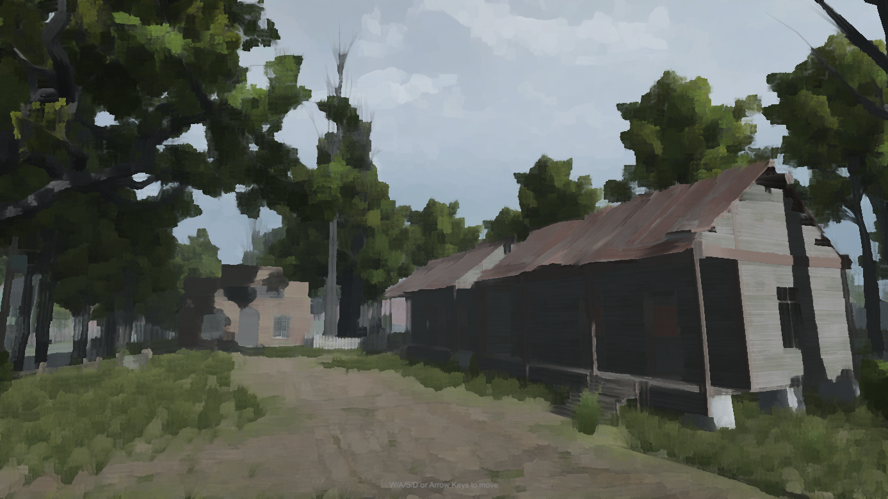
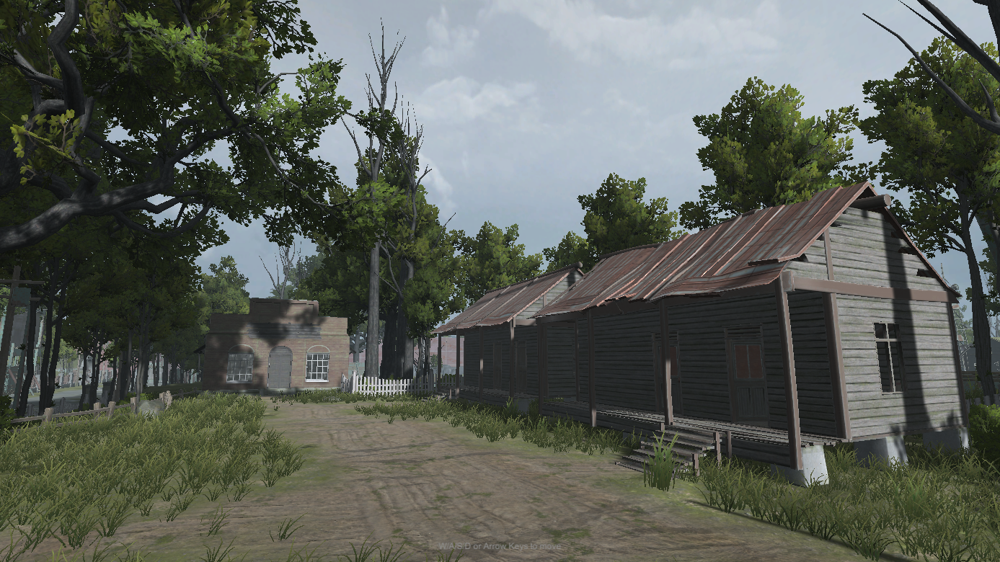
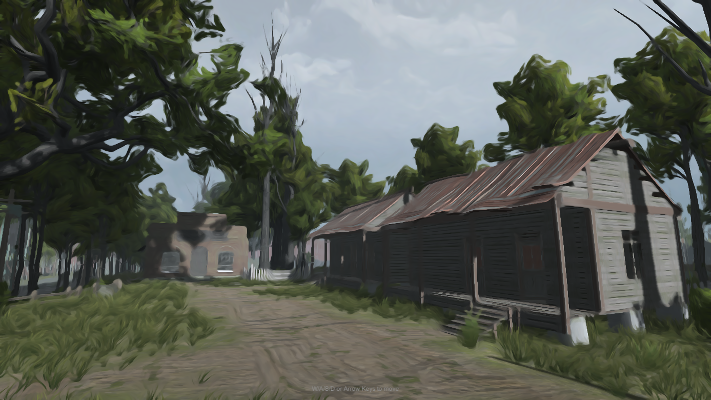

- Generated by
 1.17.0
1.17.0
|
Leadwort Studios
|



Kuwahara Filter is a customizable post-processing effect that turns your scene into a painterly, oil-paint-like render. It works with both the Built-In Render Pipeline and URP (Universal Render Pipeline), including full support for the Render Graph API introduced in newer URP versions.
The effect offers two distinct stylization modes, controlled by KuwaharaFilterType:
The Anisotropic style computes a tensor field (edge orientation and anisotropy) each frame, either via a compute shader (when supported by the platform) or a fragment-shader fallback, so the effect works consistently across a wide range of hardware.
Depending on your render pipeline, you'll attach a different component:
| Pipeline | Component |
|---|---|
| Built-In Render Pipeline | KuwaharaPostProcess (Camera component) |
| URP (compatibility mode) | KuwaharaPostProcessFeature (Renderer Feature) |
| URP (Render Graph) | KuwaharaPostProcessFeatureRG (Renderer Feature) |
All three share the same underlying settings (ClassicKuwaharaSettings / AnisotropicKuwaharaSettings), so switching pipelines later won't force you to relearn the controls.
Next: Getting Started